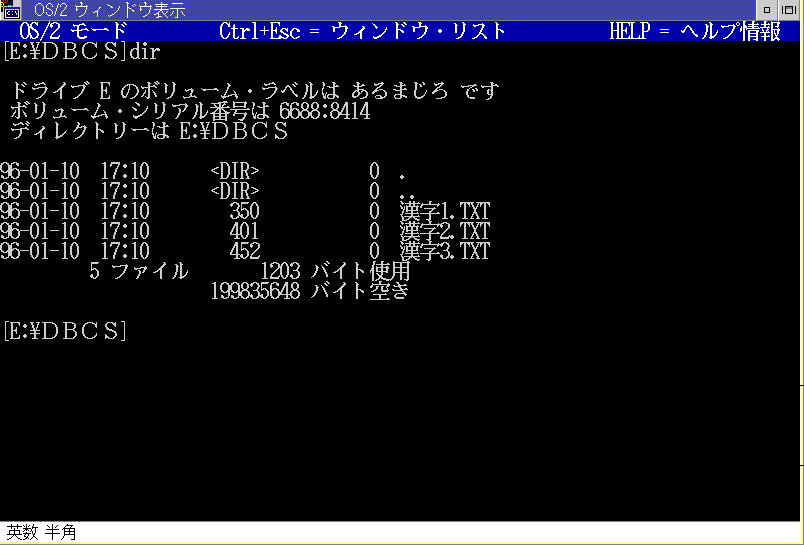

┌──────────────────────────────────────────────────────────────────────┐ │DBCS is used in messages, dialog panels, and item descriptions. │ └──────────────────────────────────────────────────────────────────────┘
Your application programs will present variety of messages, dialog panels, item descriptions to navigate users of your application programs. For better useability, those should be in a users' native language.
In the following example, the name of a window, a message from an application
program and actions invoked by push-buttons are presented in Japanese.
Example of DBCS usage (1)
┌──────────────────────────────────────────────────────────────────────┐ │DBCS is used as a part of data of application programs. │ └──────────────────────────────────────────────────────────────────────┘
Users of your application programs need to process data made of DBCS. For example, a Japanese user needs to employ DBCS to put a customer's name and his/her address into an order-entry data-base, or to add a short description of a merchandise into a product-stock data-base.
Although your programs should accept DBCS in many places, figures and numbers for calculation stay in SBCS as those in English.
In the example shown below, data from an application program, i.e. customer
names, are presented in Japanese. The customer codes given to each customer
stay in SBCS.
Example of DBCS usage (2)
┌──────────────────────────────────────────────────────────────────────┐ │DBCS is used in file names, directory names and volume labels. │ └──────────────────────────────────────────────────────────────────────┘
Your application programs may require your users to give names to files which the programs manipulate. Asian users may prefer naming the files in DBCS so that their contents of the files are self-explanatory to them.
In the following example, OS/2 file names, the directory name and the volume
label are written in Japanese.
Example of usage of DBCS file names.
